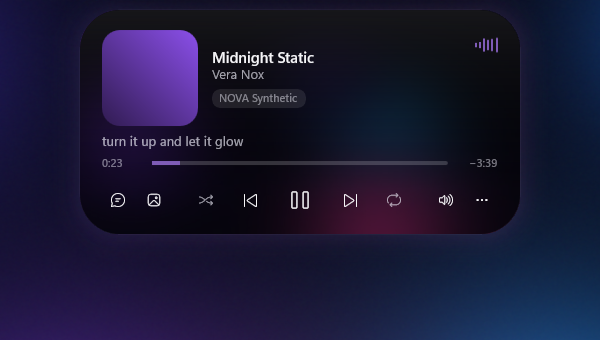
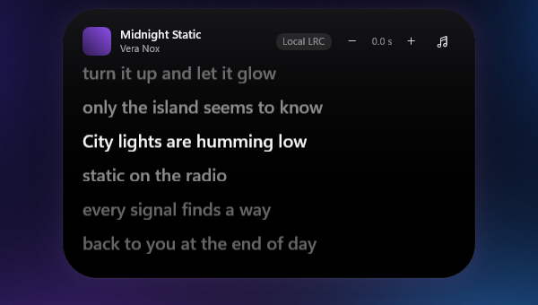
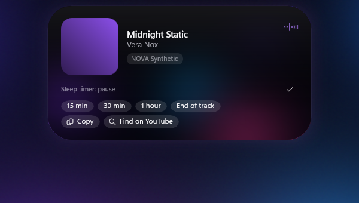
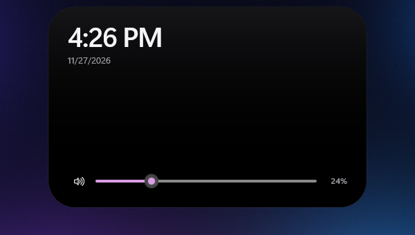

A Dynamic Island–style capsule for Windows 11 Остров в стиле Dynamic Island для Windows 11
Your music, synced lyrics, notifications and a system center live in a small capsule at the top of the screen and smoothly open up. Free, light, and it works with any player Windows sees. Музыка, текст песни, уведомления и системный центр живут в маленькой капсуле сверху экрана и плавно раскрываются. Бесплатно, не грузит ПК и работает с любым плеером, который видит Windows.
Everything at the top of your screenВсё — сверху экрана
Real screenshots of NOVA Island. The track and the lyrics are made up for the demo.Настоящие снимки NOVA Island. Трек и текст придуманы для показа.

A player for any appПлеер для любого приложения
Spotify, Yandex Music, browsers and more. Drag to seek, shuffle and repeat (where the player supports them), the player's own volume (or the Windows volume if the player has no sound of its own), and an equalizer that follows the real sound.Spotify, Яндекс Музыка, браузеры и другие. Перемотка перетаскиванием, перемешивание и повтор (если плеер их даёт), громкость самого плеера (или громкость Windows, если у плеера нет своего звука) и эквалайзер по настоящему звуку.

Synced lyricsСинхронный текст песни
From your own .lrc files or LRCLIB. Lines move only by real timestamps, never guessed. A lyric line can sit right in the small capsule.Из ваших файлов .lrc или с LRCLIB. Строки сменяются только по настоящим временным меткам, ничего не угадывается. Строку текста можно показывать прямо в маленькой капсуле.

Sleep timer and moreТаймер сна и не только
Pause in 15, 30, 60 minutes or at the end of the track. Copy the title, find it on YouTube, switch between apps that are playing.Пауза через 15, 30, 60 минут или в конце трека. Скопировать название, найти на YouTube, переключиться между играющими приложениями.

System center and notificationsСистемный центр и уведомления
Windows notifications on the island, with quiet hours and flood protection. Notification text is never stored.Уведомления Windows на острове, тихие часы и защита от потока уведомлений. Их текст нигде не сохраняется.
Install in a minuteУстановка за минуту
Windows 11, x64. .NET and the Windows App Runtime are inside. Windows 10 is not supported.Windows 11, x64. .NET и Windows App Runtime уже внутри. Windows 10 не поддерживается.
- Download the single file
NovaIsland-…-Setup.zip.Скачайте один файлNovaIsland-…-Setup.zip. - Right-click it → Extract All, then run
Install.cmd.Правой кнопкой → «Извлечь все», затем запуститеInstall.cmd. - Windows asks for administrator rights once (the prompt says “Windows PowerShell”): click Yes. NOVA installs and starts; press any key to close the black window.Windows один раз попросит права администратора (в окне будет «Windows PowerShell»): нажмите «Да». NOVA установится и запустится; потом нажмите любую клавишу, чтобы закрыть чёрное окно.
If Windows shows “Windows protected your PC”, click More info → Run anyway, but only for the file you downloaded from this page.Если Windows покажет «Система Windows защитила ваш компьютер», нажмите «Подробнее» → «Выполнить в любом случае», но только для файла, скачанного с этой страницы.
On first start NOVA turns on start with Windows and sets free hotkeys (both can be changed in Settings), and Windows asks once for the microphone and notifications.При первом запуске NOVA включает автозапуск вместе с Windows и назначает свободные горячие клавиши (и то и другое меняется в настройках), а Windows один раз спросит про микрофон и уведомления.
Voice assistant does not start? Install the Microsoft Visual C++ Redistributable (x64) from Microsoft; many PCs already have it.Не запускается голосовой ассистент? Установите Microsoft Visual C++ Redistributable (x64) с сайта Microsoft; на многих ПК он уже есть.
Why does Windows warn me?Почему Windows предупреждает?
NOVA Island is signed with its own certificate (CN=NovaIsland Dev), not a paid one, so Windows does not know the publisher yet and may say so. Install.cmd runs Install.ps1 (you can read it) once, with PowerShell's script policy relaxed for that run only. The script adds the certificate to Local Machine → Trusted People (this is the admin prompt), removes an old developer build of NOVA if there is one (your settings stay), installs the .msix next to it (closing a running NOVA first) and starts NOVA. It does not turn off SmartScreen or your antivirus, and there is no need to.
NOVA Island подписана своим сертификатом (CN=NovaIsland Dev), а не платным, поэтому Windows пока не знает издателя и может об этом написать. Install.cmd один раз запускает Install.ps1 (его можно прочитать), ослабив политику скриптов PowerShell только на этот запуск. Скрипт добавляет сертификат в «Локальный компьютер → Доверенные лица» (это и есть запрос прав администратора), удаляет старую сборку разработчика NOVA, если она есть (настройки остаются), ставит .msix, который лежит рядом (запущенную NOVA сначала закрывает), и запускает NOVA. Он не отключает SmartScreen и антивирус, и вам их отключать не нужно.
Certificate thumbprint:Отпечаток сертификата: 784A44CC9743B80100C95C3852142647B53DD8B3
How do I check the download?Как проверить скачанный файл?
In PowerShell, in your Downloads folder, runВ PowerShell, в папке «Загрузки», выполните
Get-FileHash .\NovaIsland-*-Setup.zipand compare the result with SHA256SUMS.txt in the same release (upper or lower case does not matter).и сравните результат с SHA256SUMS.txt в том же выпуске (регистр букв не важен).
The Install button of the .msix is greyКнопка «Установить» в .msix серая
Windows does not trust the certificate yet. Close that window and run Install.cmd from the Setup.zip instead.Windows ещё не доверяет сертификату. Закройте это окно и запустите Install.cmd из Setup.zip.
How do updates work?Как обновляться?
NOVA tells you when a new version is out. Click Settings → About → Updates → Download and install, then confirm in the Windows installer window that opens.NOVA сама скажет о новой версии. Нажмите «Настройки → О программе → Обновления → Скачать и установить» и подтвердите установку в открывшемся окне Windows.
How do I uninstall it?Как удалить?
Settings → Apps → Installed apps → NOVA Island → Uninstall. To also remove the certificate, run in an administrator PowerShell:«Параметры → Приложения → Установленные приложения → NOVA Island → Удалить». Чтобы удалить и сертификат, выполните в PowerShell от имени администратора:
Remove-Item Cert:\LocalMachine\TrustedPeople\784A44CC9743B80100C95C3852142647B53DD8B3Your settings, GIF library, logs and the voice model stay in %LOCALAPPDATA%\NovaIsland; delete that folder to remove them too.Настройки, гифки, журналы и модель голоса остаются в папке %LOCALAPPDATA%\NovaIsland; удалите её, чтобы стереть и их.
Known limitationsИзвестные ограничения
- Over exclusive full-screen apps, Windows may not show the island.
- Shuffle and repeat work only with players that report them to Windows (browsers do not). Windows gives apps no likes or queue.
- Battery level is shown only for Bluetooth devices that report it to Windows.
- Because the certificate is self-signed, SmartScreen may warn about an unknown publisher.
- Поверх эксклюзивного полноэкранного режима Windows может не показать остров.
- Перемешивание и повтор работают только у плееров, которые сообщают их Windows (браузеры не сообщают). Лайков и очереди Windows приложениям не даёт.
- Заряд показывается только у Bluetooth-устройств, которые сообщают его Windows.
- Сертификат самоподписанный, поэтому SmartScreen может предупредить о неизвестном издателе.
What NOVA sends to the internetЧто NOVA отправляет в интернет
NOVA itself has no ads, accounts, analytics or telemetry. This is everything it sends:В самой NOVA нет рекламы, аккаунтов, аналитики и телеметрии. Вот всё, что она отправляет:
| WhatЧто | WhereКуда | WhenКогда | Turn offГде выключить |
|---|---|---|---|
| Artist, title, album and length of the track (or the words you type in the manual search), to find lyricsИсполнитель, название, альбом и длина трека (или слова, которые вы ввели в ручном поиске), чтобы найти текст | lrclib.net | A track without a local .lrc or saved lyrics starts, or you search by handНачался трек без локального файла .lrc и без сохранённого текста, или вы ищете вручную | Settings → LyricsНастройки → Тексты |
| The voice model, once (~57 MB; ~31 MB if you pick Tiny)Модель голоса, один раз (~57 МБ; ~31 МБ, если выбрать Tiny) | huggingface.co and its file servershuggingface.co и его файловые серверы | While voice is on and the model is not on your PC yet (normally right after the first start)Пока голос включён, а модели ещё нет на ПК (обычно сразу после первого запуска) | Settings → VoiceНастройки → Голос |
| Update check (and the download count in About)Проверка обновлений (и счётчик скачиваний в «О программе») | api.github.com, the NOVA releases repositoryapi.github.com, репозиторий выпусков NOVA | About a minute after start if “Check at start” is on (it is by default), and when you click “Check now”Через минуту после запуска, если включено «Проверять при запуске» (включено по умолчанию), и по кнопке «Проверить сейчас» | Settings → About → UpdatesНастройки → О программе → Обновления |
| The new versionНовая версия | github.com and its download serversgithub.com и его серверы загрузки | Only when you click “Download and install”Только по нажатию «Скачать и установить» | — |
| Track, artist, album, player, progress, cover and buttons, shown in your Discord status to your friends and members of your serversТрек, исполнитель, альбом, плеер, время, обложка и кнопки — их видят в вашем статусе Discord друзья и участники ваших серверов | Discord, through the Discord app on your PCDiscord, через приложение Discord на вашем ПК | While Discord is runningПока запущен Discord | Settings → DiscordНастройки → Discord |
| Artist and title, to find a cover for the Discord statusИсполнитель и название, чтобы найти обложку для статуса Discord | itunes.apple.com, api.deezer.com | Only while connected to DiscordТолько пока есть связь с Discord | Settings → DiscordНастройки → Discord |
| Artist and title of the playing track, as a YouTube searchИсполнитель и название играющего трека как поиск на YouTube | youtube.com, in your browseryoutube.com в браузере | Only when you click “Find on YouTube”Только по нажатию «Найти на YouTube» | — |
Each of these requests carries the app's name and version and, like any connection, your IP address. Other links in the app open in your browser only when you click them. Windows and the bundled Windows App Runtime may send Microsoft diagnostic data, as your Windows privacy settings allow.В каждом из этих запросов есть название и версия программы и, как при любом подключении, ваш IP-адрес. Другие ссылки в программе открываются в браузере только по нажатию. Windows и встроенный Windows App Runtime могут отправлять Microsoft диагностические данные, насколько это разрешают настройки конфиденциальности Windows.
Never sent by NOVA: notification text; your voice (the microphone opens only while the island is listening to you, and speech is recognized on your PC); the sound for the equalizer (analysed in memory and dropped at once); your GIFs, themes, settings and logs. A profile you export holds all your settings and GIFs; NOVA never sends it, you choose who gets it.NOVA никуда не отправляет: текст уведомлений; ваш голос (микрофон включается, только пока остров вас слушает, и речь распознаётся на вашем ПК); звук для эквалайзера (разбирается в памяти и сразу забывается); ваши гифки, темы, настройки и журналы. В экспортированном профиле лежат все ваши настройки и гифки; NOVA его никуда не отправляет, кому его дать, решаете вы.